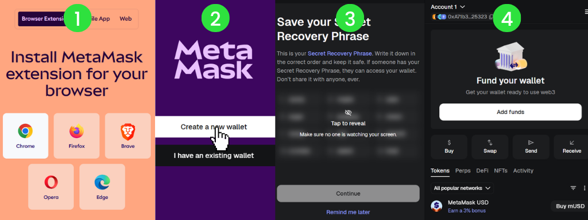
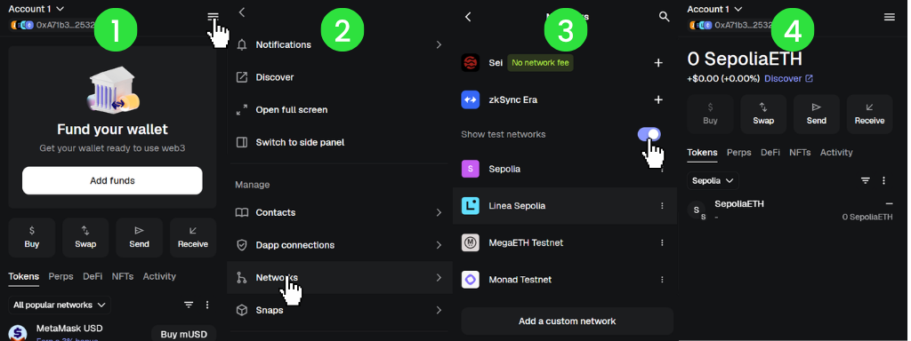
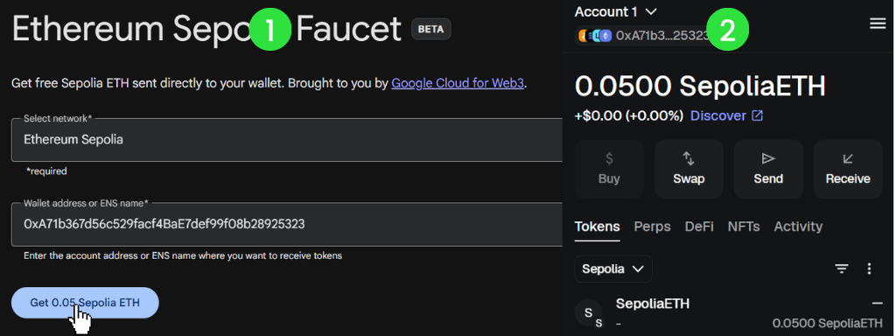
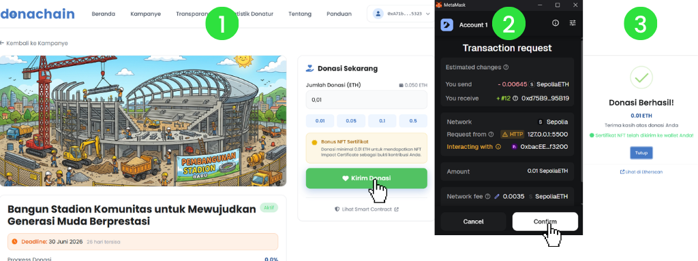
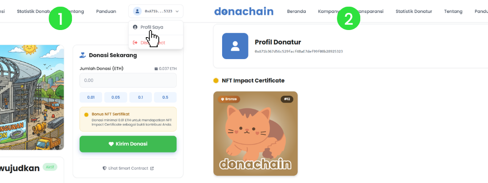
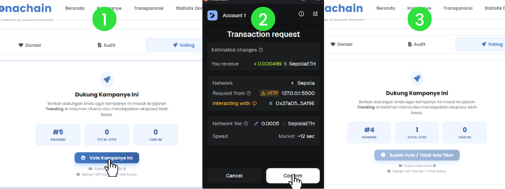
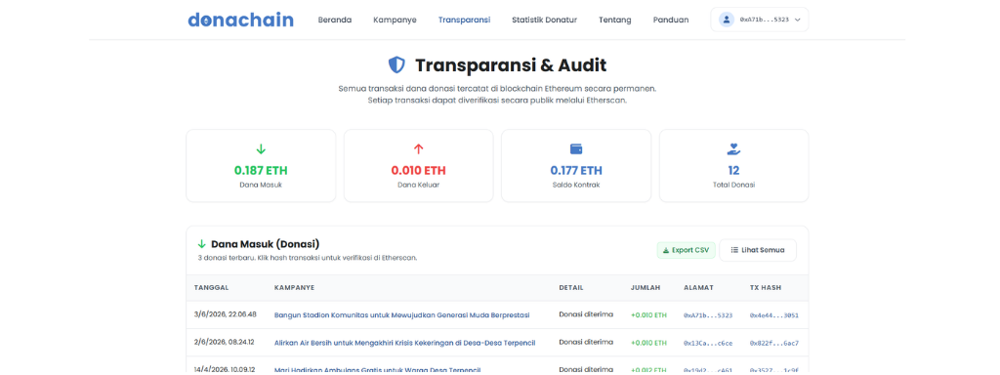
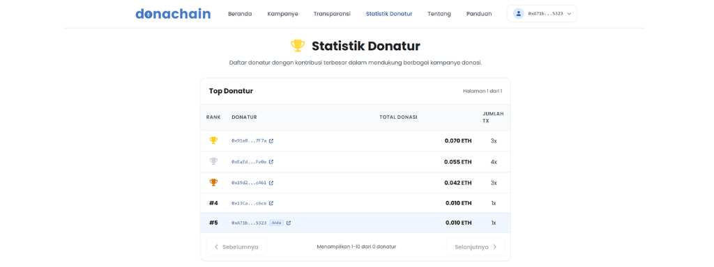

Panduan Pemula Donachain
Selamat datang di Donachain. Platform ini menggunakan teknologi blockchain untuk memastikan setiap donasi Anda sampai ke tujuan dengan transparansi 100%. Donasi dilakukan menggunakan aset kripto Ethereum (ETH) di jaringan uji coba (testnet) Sepolia.
Catatan Penting:
Platform ini berjalan di jaringan Sepolia Testnet. Donasi yang dikirimkan menggunakan saldo uji coba dan tidak memiliki nilai uang riil.
Glosarium/Istilah Penting
Blockchain
Teknologi buku besar digital yang mencatat transaksi secara permanen dan menjaga integritas data sehingga informasi yang telah tercatat tidak dapat diubah.
Crypto Wallet
Dompet digital yang digunakan untuk menyimpan aset kripto dan melakukan transaksi pada platform ini.
Ethereum (ETH)
Aset kripto yang digunakan sebagai media transaksi pada platform ini.
Smart Contract
Program yang berjalan di blockchain untuk mengatur dan mengeksekusi transaksi secara otomatis sesuai aturan yang telah ditentukan.
Sepolia Testnet
Jaringan uji coba Ethereum yang digunakan untuk pengembangan dan pengujian aplikasi tanpa menggunakan aset kripto bernilai nyata.
NFT (Non-Fungible Token)
Aset digital unik berbasis blockchain yang diberikan kepada donatur sebagai bentuk apresiasi atas kontribusinya.
1 Instalasi MetaMask
MetaMask adalah dompet digital (wallet) yang berfungsi sebagai identitas Anda di dunia Web3. Anda memerlukan MetaMask untuk berinteraksi dengan Donachain.
- Kunjungi metamask.io.
- Klik Install MetaMask untuk browser Anda (Chrome, Edge, Brave) atau download aplikasinya di App Store/Play Store.
- Ikuti instruksi pembuatan wallet baru. Pastikan Anda menyimpan Secret Recovery Phrase di tempat yang sangat aman dan jangan pernah membagikannya kepada siapapun.

2 Konfigurasi ke Jaringan Sepolia
Donachain menggunakan jaringan Ethereum Sepolia. Biasanya, MetaMask sudah menyertakan jaringan ini secara default.
- Buka MetaMask Anda.
- Klik menu pilihan jaringan di pojok kiri atas.
- Pilih Sepolia Test Network.
- Jika tidak muncul, buka 'Settings' > 'Networks' > aktifkan Show test networks.

3 Mendapatkan Testnet ETH (Faucet)
Karena kita menggunakan jaringan uji coba, Anda bisa mendapatkan saldo ETH secara gratis melalui "Faucet".
- Salin alamat wallet Anda dari MetaMask (klik pada bagian kode unik di bawah nama akun Anda).
- Kunjungi penyedia faucet seperti Google Cloud Web3.
- Masukkan alamat wallet Anda dan ikuti instruksi hingga saldo ETH masuk ke wallet Anda.

4 Cara Melakukan Donasi
Setelah wallet terhubung dan memiliki saldo, kini Anda siap untuk berdonasi.
- Kembali ke halaman Kampanye di Donachain.
- Klik tombol Hubungkan Wallet di pojok kanan atas.
- Pilih kampanye yang ingin Anda dukung.
- Masukkan jumlah donasi (misal:
0.01ETH). - Klik Kirim Donasi dan klik Confirm pada pop-up MetaMask yang muncul.

5 Mendapatkan Bukti Kontribusi (NFT)
Sebagai bentuk apresiasi, Donachain memberikan sertifikat digital berupa NFT untuk donasi dengan jumlah minimal tertentu.
- Donasi minimal 0.01 ETH akan mendapatkan NFT Sertifikat otomatis.
- Anda dapat melihat koleksi NFT Anda di halaman Profil Saya.
- Setiap NFT memiliki ID unik yang membuktikan kontribusi Anda tersimpan selamanya di blockchain.

6 Menggunakan Tiket Voting
NFT Sertifikat yang Anda terima bukan sekadar gambar, melainkan Tiket Voting. Anda dapat menggunakan tiket ini untuk memberikan dukungan pada kampanye favorit Anda.
- Buka halaman detail kampanye yang ingin Anda dukung.
- Klik tab Voting untuk melihat statistik dukungan.
- Klik tombol Vote Kampanye Ini menggunakan tiket NFT Anda.
- Voting meningkatkan kepercayaan donatur lain terhadap kampanye tersebut.

7 Audit & Transparansi
Donachain menjamin transparansi 100%. Anda dapat memantau setiap dana yang masuk dan keluar secara real-time.
- Kunjungi halaman Transparansi untuk melihat laporan keuangan platform secara global.
- Pada setiap detail kampanye, pilih tab Audit untuk melihat riwayat dana spesifik kampanye tersebut.
- Klik pada link Tx Hash atau Address untuk memverifikasi transaksi langsung di blockchain via Etherscan.

8 Statistik Donatur (Leaderboard)
Apresiasi bagi para donatur terbaik ditampilkan di halaman Statistik Donatur. Sistem secara otomatis mengurutkan donatur berdasarkan total kontribusi tertinggi yang tercatat di blockchain.
- Lihat peringkat 5 donatur teratas di beranda.
- Buka halaman Statistik Donatur untuk daftar lengkap leaderboard.
- Alamat wallet donatur ditampilkan sebagai identitas anonim namun tetap terverifikasi.
